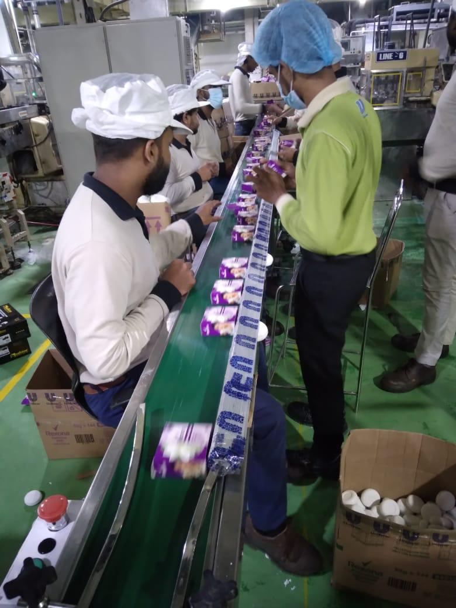
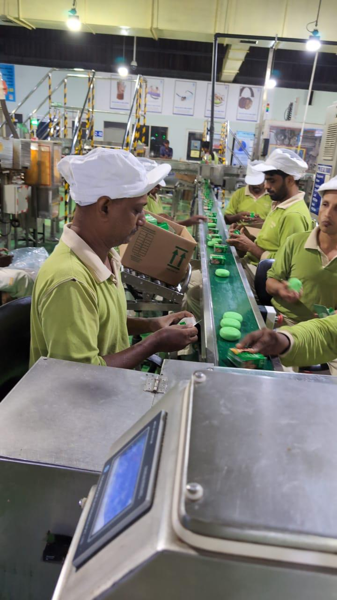
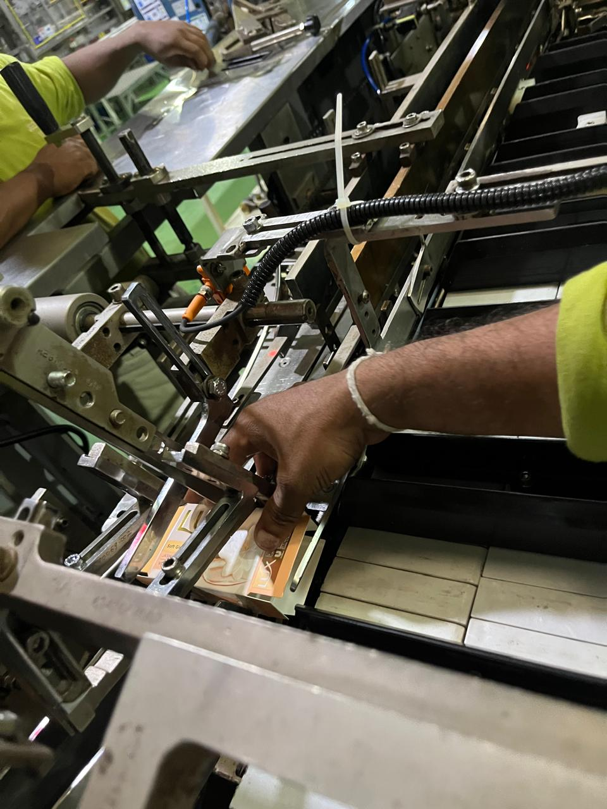
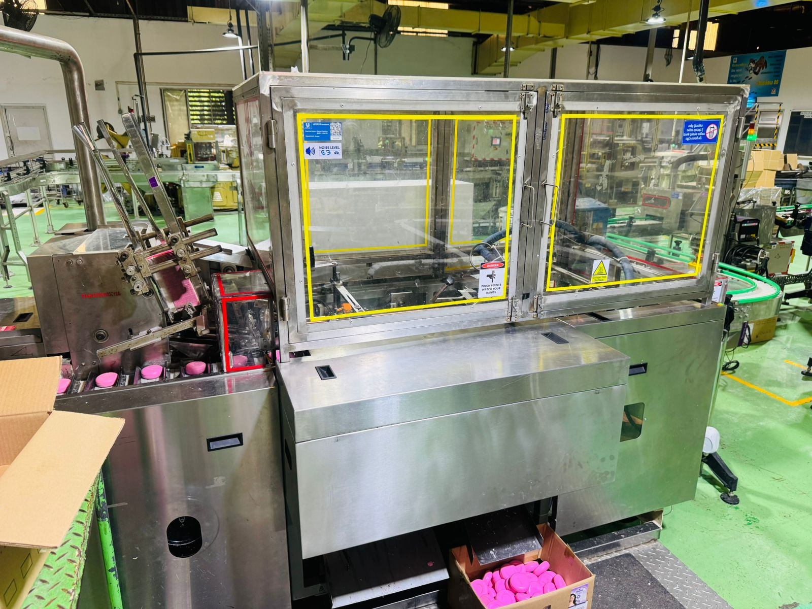
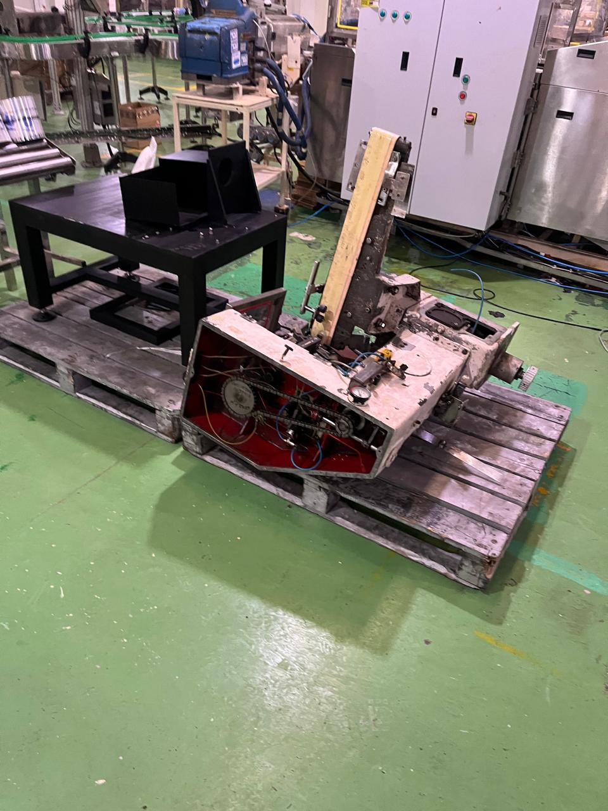
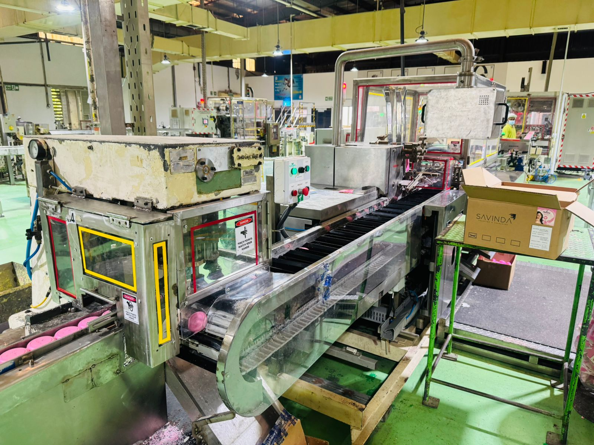
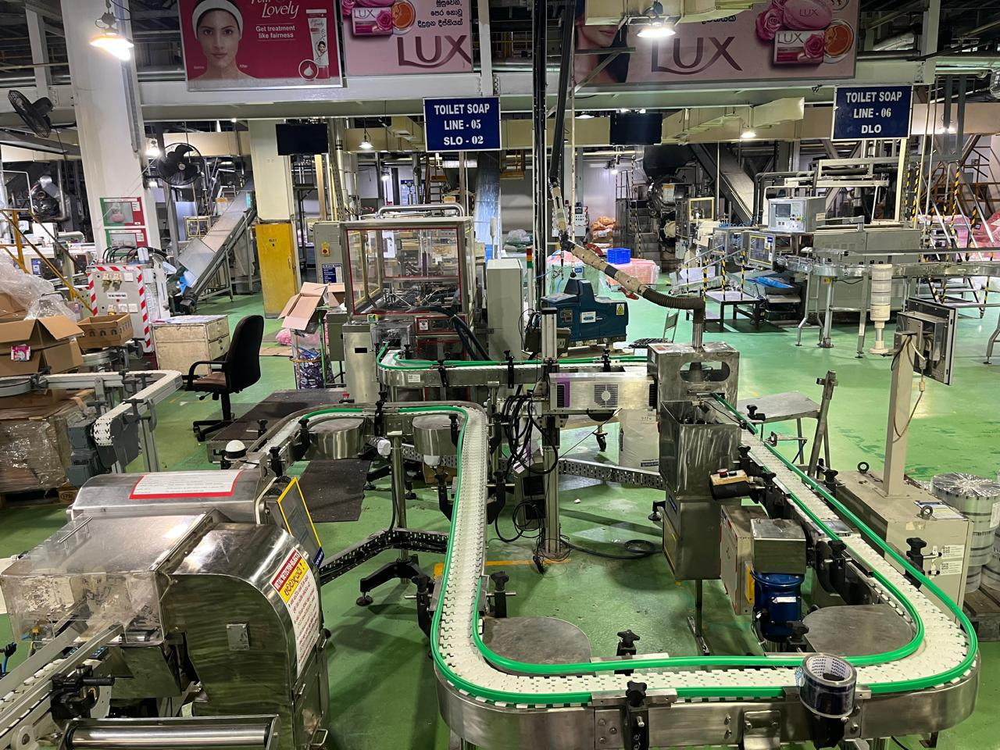
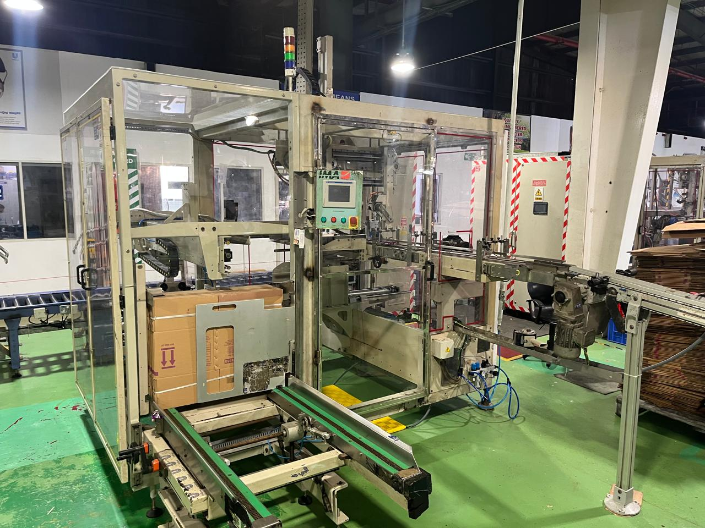

New Soap Relaunch – Line Transformation & Automation
Project Objective:
Increase packing line capacity, improve operational efficiency, and reduce manpower requirements through phased automation of the soap packing line.
Description
This project involved a phased transformation of the soap packing line to support the relaunch of a key product portfolio. Multiple automation initiatives were implemented to improve throughput, reduce manual intervention, increase reliability, and enhance overall operational performance.
Project Photos
Phase 1


Phase 2


Phase 3


Phase 4


Key Actions
- Executed automation projects in four implementation phases.
- Improved conveyor and product handling systems.
- Integrated automated packing and material flow solutions.
- Optimized line layout and machine interfaces.
- Led commissioning and performance validation activities.
Key Results
- ✅ Increased packing line capacity to 90 units/minute.
- ✅ Reduced manpower requirement from 14 operators to 4 operators.
- ✅ Improved productivity and line efficiency.
- ✅ Reduced operational costs.
- ✅ Enhanced process reliability and automation level.
Skills Demonstrated
Automation • Mechanical Engineering • Project Management • Manufacturing Excellence • Continuous Improvement • CAPEX Delivery • Operational Excellence
← Back to Portfolio